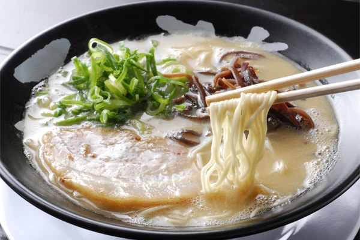
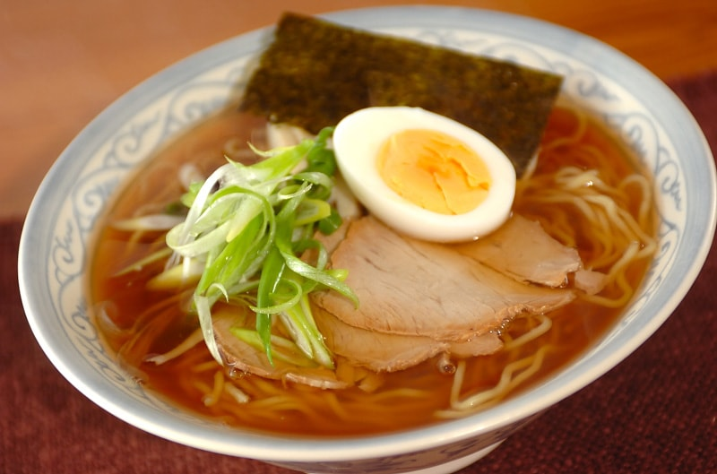
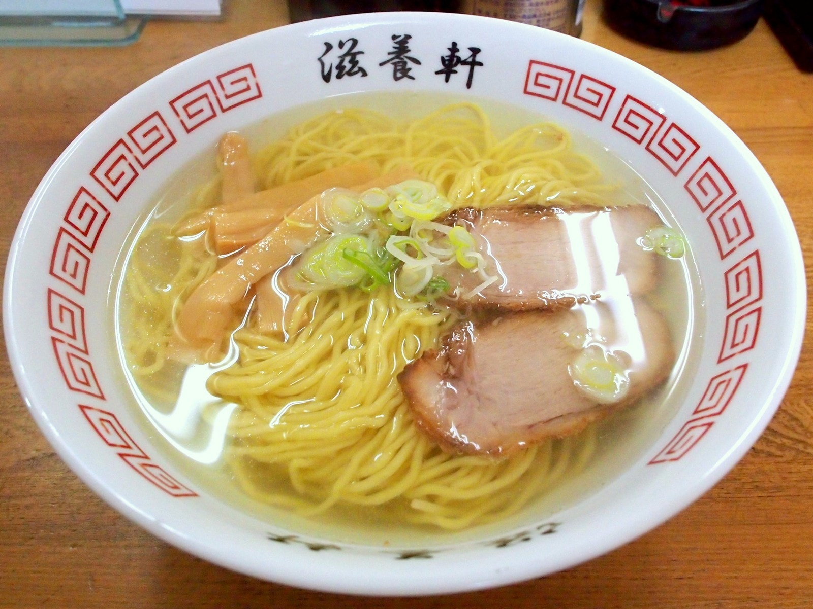
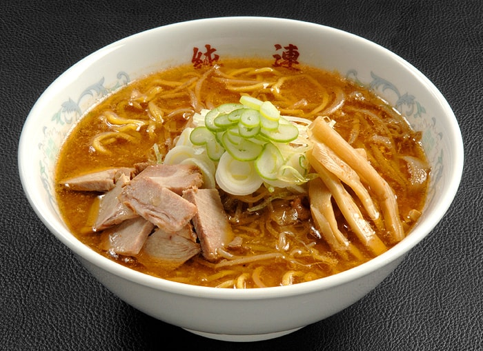

The Big 4
The Broth of any bowl of ramen is the arguably the defining feature of the dish that classifies the "type" of Ramen the dish falls under. This is because the broth is what ultimately determines its final flavor. There is a staggering variety of suitable bases for Ramen broth. These include pork bones, chicken bones, beef bones, and fresh seafood being the most common. However, ingredients like sea kelp or dried seafood can also be utilized for lighter broths. In addition to the broth base, there are a number of staple ramen seasonings that determine the Ramen's flavor profile. The flavorings can include Shio(sea salt), Shoyu(Japanese soy sauce), miso, and even curry. The combination of broth and seasonings is how we can classify a bowl of Ramen. While there are dozens of varieties of ramen, there are 4 main styles that every Ramen connoisseur should be familiar with.
TonkotsuTonkotsu, a classic Ramen style originally from Kyushi. The distinct flavor profile of tonkatsu comes from boiling pork bones for 12-15 hours - until the collagen has dissolved into the stock. What you are left with is an incredibly rich, cloudy, white broth. Additioanlly, chicken broth and pork fat can be added to create a deeper flavor. |
 |
|  |
ShoyuShoyu or "Soy Sauce" is one of the oldest styles of Ramen. The flavor comes from using soy sauce as the main savoury elemont of the dish. However, the soy sauce is not the regular soy sauce you would find sitting on your table. Rather it is a typically a special soy sauce with special ingredients - a sort of secret recipe depending on the Ramen shop. Shoyu is also the only type of Ramen that typically does not contain pork. The broth is dark but clear, and tends to have some sweeter notes. |
ShioShio or "Salt" ramen is the oldest and most fundamental style of ramen. The main savoruy note of the broth is salt, as well as some mix chicken, fish, vegetables, and sea-weed. As well, the broth is not boiled very long. Thus, you are left with a clear and light tasting soup. |
 |
|  |
MisoMiso is a classic Japanese soybean paste incredibly common in japanese cuisine. Thus, as the name suggests, Miso Ramen is flavored with miso paste. The resulting broth is rich and a cloudy brown color with a complex flavor. This style of Ramen originated in Hokkaido where their long winters birthed this hearty ramen style. |